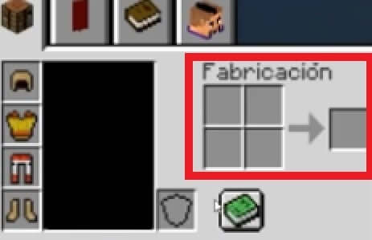
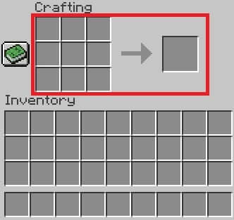

crafteo
Minecraft es sinónimo de creatividad. En el juego podrás no sólo construir todo cuanto puedas imaginar, sino también podrás crear tus propios objetos. A este proceso se le llama popularmente craftear y para ello necesitarás combinar distintos materiales que hayas recopilado en el juego.
CRAFTEO EN EL INVENTARIO - paso 1
Craftear desde el inventario La primera forma con la que podrás crear objetos desde Minecraft es utilizando tu inventario. Al acceder a éste verás una ventana de fabricación de 2×2 justo a la derecha de la pantalla. Para crear un objeto, simplemente arrastra los objetos necesarios hasta esta parrilla. Una vez hecho esto, el objeto resultante aparecerá en la ventana que se encuentra directamente junto a ella. Ahora únicamente deberás trasladar el objeto hasta tu inventario. ¡Así de sencillo!
CRAFTEO EN MESA DE TRABAJO- paso 2
Craftear desde el inventario La primera forma con la que podrás crear objetos desde Minecraft es utilizando tu inventario. Al acceder a éste verás una ventana de fabricación de 2×2 justo a la derecha de la pantalla. Para crear un objeto, simplemente arrastra los objetos necesarios hasta esta parrilla. Una vez hecho esto, el objeto resultante aparecerá en la ventana que se encuentra directamente junto a ella. Ahora únicamente deberás trasladar el objeto hasta tu inventario. ¡Así de sencillo!